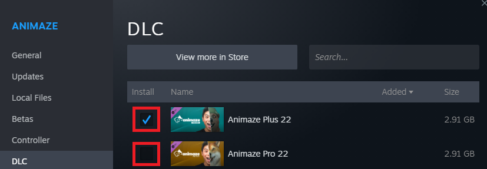
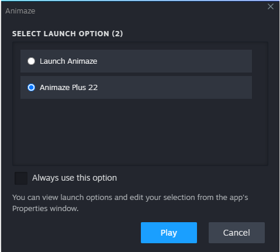

What do I do if I have bought Steam Animaze Plus/Pro DLC 22 or 23 but still get the free Animaze without subscription perks?
The Animaze Plus/Pro 22 DLCs provide access to a separate special version of the Animaze application with a perpetual license (one-time purchase) having all Plus/Pro subscription perks. The DLC is a different application altogether and needs to be launched separately.
Check if Animaze Plus/Pro 22 or 23 DLC is installed
-
Go to Steam Client > Library
-
Right-click on Animaze, go to Properties, then to the DLC tab
-
Make sure the checkmark of the DLC is checked, if not, toggle it on and wait for the DLC to Download


-
Done
Launch Animaze Plus/Pro 22 or 23 in two ways
-
Go to Steam Client and launch Animaze. You'll be prompted with two launch options: Animaze (which is the freemium subscription-based app) and Animaze Plus/Pro 22 which is the DLC app (one-time purchase version). Optionally, use the “Always use this option” toggle to tell Steam Client that when you want to launch Animaze (be it through Steam Client or Desktop shortcut), you want to launch the Animaze Plus/Pro 22 version


-
Navigate to <steamInstallDir>/steamapps/common/Animaze/Animaze2022/Bin/ folder and run AnimazeDesktop.exe.
| Set Animaze Plus/Pro 22 or 23 as default launch option from Steam Client Library, right click on Animaze, go to Properties, go to General tab, find Launch Options drop-down, select Animaze Plus/Pro 22 or 23. |
| Owning or buying the Animaze Plus/Pro 22 or 23 DLC does not automatically cancel an existing subscription plan. |